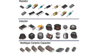

<div layout="row" layout-wrap class="my-top-nav-bar" ng-controller="NavbarCtrl as vm">
    <md-toolbar class="md-toolbar-tools my-md-menu-top my-md-no-padding" layout="row" layout-align="center center" style="background-color:#FAFAFA">
        <div flex-gt-md="90" layout="row" layout-fill>
            <div flex layout="row" layout-fill layout-align="end  center" ng-cloak>
                <md-button layout="row" layout-align="center center" class="md-primary md-hue-1 my-md-link-btn" ui-sref="app.user.dashboard.pedidos">Meus Pedidos
                </md-button>
                <md-button layout="row" layout-align="center center" class="md-primary my-md-link-btn md-hue-1" ui-sref="app.user.dashboard.dados" ng-hide="!isloggedIn">
                    <md-icon class="material-icons md-36">account_circle</md-icon>Olá {{loggedUserName}}
                </md-button>

                <md-button layout="row" layout-align="center center" class="md-primary md-hue-1 my-md-link-btn" ng-hide="isloggedIn" ui-sref="app.user.signup">Cadastro
                </md-button>
                <md-button layout="row" layout-align="center center" class="md-primary md-hue-2 my-md-link-btn" ng-hide="isloggedIn" ui-sref="app.user.login"><i class="fa fa-sign-in fa-2x"></i>&nbsp; Entrar
                </md-button>
                <md-button layout="row" layout-align="center center" class="md-primary md-hue-2 my-md-link-btn" ng-hide="!isloggedIn" ng-click="vm.logout()"><i class="fa fa-sign-out fa-2x"></i>Sair
                </md-button>
                <md-button layout="row" layout-align="center center" class="md-warn md-raised" ui-sref="app.minhaCesta" ng-mouseover="vm.showPutedInCartToast()">
                    <md-icon class="material-icons">shopping_cart</md-icon>
                    <span>{{vm.kartSize}}</span>
                </md-button>
                <!--                <md-button class="md-primary my-md-link-btn" ng-click=" vm.showPutedInCartToast()">Toast</md-button>-->

            </div>

        </div>

    </md-toolbar>
    <md-toolbar layout="row" layout-align="center center" class="my-md-no-padding md-toolbar-tools my-nav-bar-menu">
        <div flex="100" flex-gt-md="90" layout="row" class="md-menu-toolbar" layout-align="space-between center">
            <div id="myCartToast"></div>
            <div flex layout="row">
                <md-button class="menu-button groupX middle">
                    
                </md-button>
            </div>
            <div flex="50" layout="row">
                <div class="menu-bar" layout="column" ng-mouseleave="vm.closeMenus()">
                    <md-button class="menu-button groupX middle" ng-click="vm.OpenMenu()">
                        Produtos
                        <md-icon class="material-icons my-md-rotate-90">chevron_right</md-icon>
                    </md-button>
                                        <div layout="column" layout-align="center center" ng-show="true" class="full-menu md-whiteframe-3dp" role="menu"> 
<!--                    <div layout="column" layout-align="center center" layout-padding ng-show="vm.showMenu" class="full-menu my-md-grey-bg md-whiteframe-3dp" role="menu">-->
                        <div layout="row" layout-align="center center" layout-padding class="my-md-menu-item" ng-class="{'my-md-menu-open':vm.isSubMenuOpen}">
                            <div  flex="15" ng-repeat="prdctNavCat in vm.productNavCategories">
                                <md-button ng-mouseover="vm.openSubMenu($index)" ng-click="vm.prdgetSect(prdctNavCat.name); vm.openSubMenu($index)">
                                    <md-card layout="column" layout-align="space-between center" ng-class="{'active-menu':vm.activeMenuIdx==$index, }">
                                        <md-card-content>
                                            
                                            <div layout="column" layout-align="space-around center">
                                            <p flex class="md-block" style="color:black">{{prdctNavCat.name}}
                                            </p>
                                            <span flex></span>
                                            <md-icon style="color:black" class="material-icons  my-md-icon-fit">expand_more</md-icon>
                                            </div>
                                        </md-card-content>
                                        
                                    </md-card>
                                </md-button>
                                <div layout="row" layout-align="center center" class="submenu md-whiteframe-18dp" ng-show="vm.showSubMenu ==$index && vm.showMenu">
                                    <md-button layout-padding layout-margin ng-repeat="prdctNavSubCat in vm.productNavCategories[$index].subcat" ui-sref="app.produtos.section.category({section:prdctNavCat.name, category:prdctNavSubCat.name})" ng-click="vm.getCatg(prdctNavCat.name, prdctNavSubCat.name); vm.closeMenus()">
                                        <md-card >
                                            <md-card-content>
                                                
                                            </md-card-content>
                                            <md-card-actions>
                                                <p style="color:black">{{prdctNavSubCat.name}}</p>
                                            </md-card-actions>
                                        </md-card>
                                    </md-button>
                                    <md-button class="md-primary">Todo o departamento</md-button>
                                  </div>
                            </div>
                        </div>

                    </div>
                </div>
                <div>
                    <md-button class="menu-button groupX middle">
                        Tutoriais
                    </md-button>
                </div>
                <div>
                    <md-button class="menu-button groupX middle">
                        Contato
                    </md-button>
                </div>
            </div>
            <div flex="25" layout="row" layout-align="center center">
                <md-input-container flex md-no-float layout="row">
                    <input placeholder="Buscar" type="text" ng-model="vm.searchText" style="color:rgba(255, 255, 255, 0.870588)">
                </md-input-container>
                <md-button class="md-icon-button" ng-click="vm.searchPrd(vm.searchText)">
                    <md-icon class="material-icons">search</md-icon>
                </md-button>
            </div>
        </div>
    </md-toolbar>
</div>